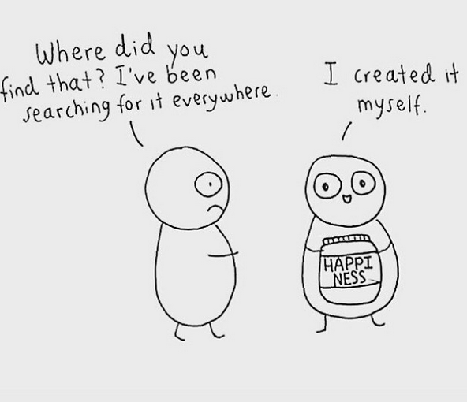
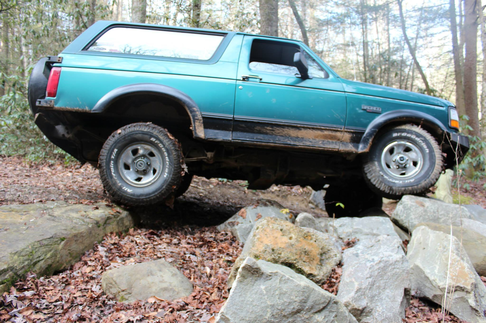
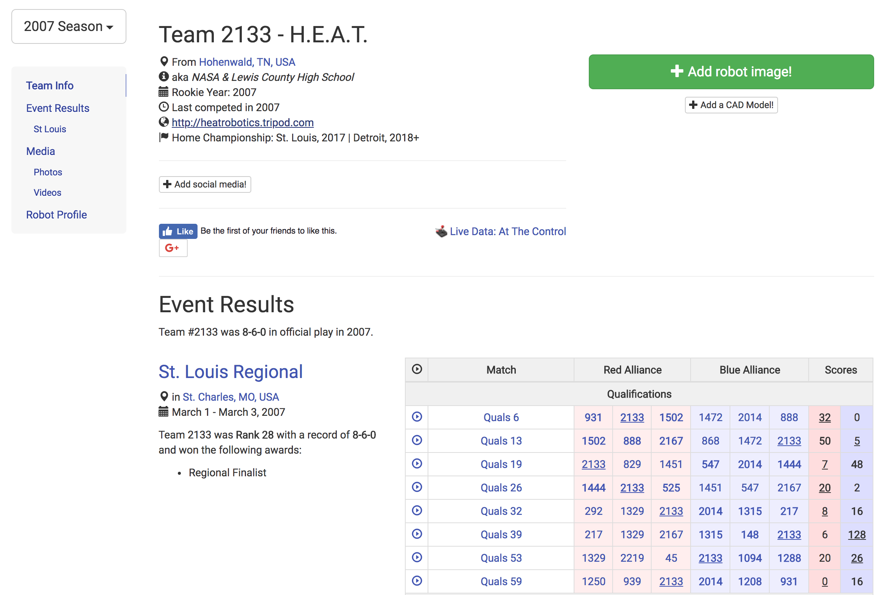
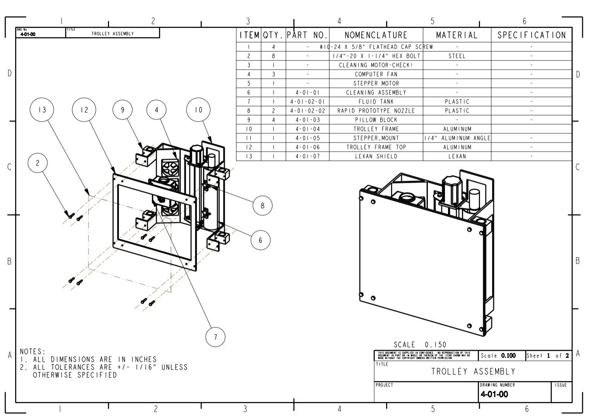
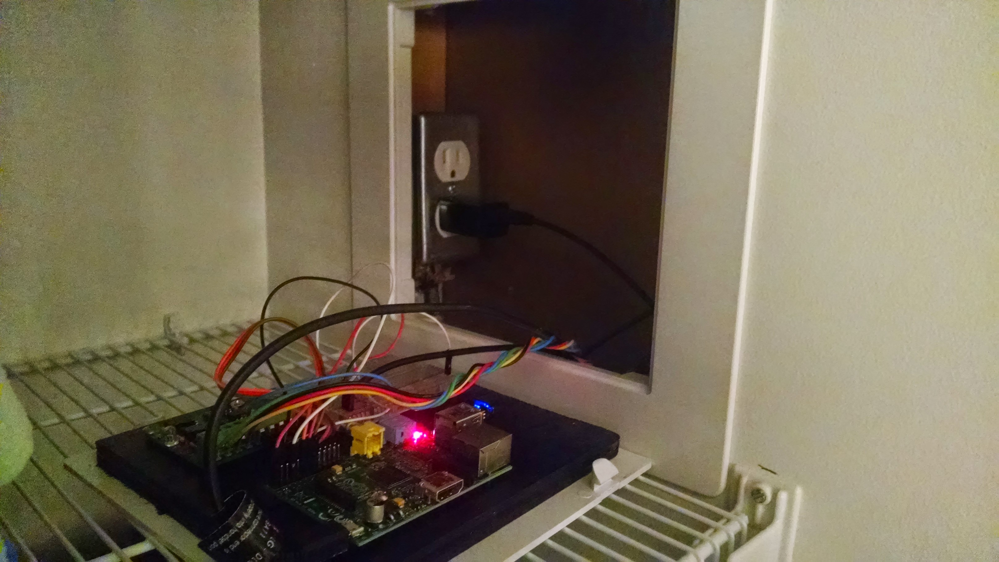

Make Something
Slides made by Jeff McGehee / @jeffemc2

First, let's talk about happiness
😁😁😁😁😁😁😁😁😁😁😁😁😁😁😁😁😁
Why should I be listening to this guy?
Job -- Data Scientist
- Option to work fully remote, or go into the office whenever I want.
- Unlimited vacation time.
- I like what I work on.
- Salary: $120k/yr
HS Dropout: $21,000
HS Graduate: $30,000
College Graduate: $45,000
Engineer: $67,000
Software Engineer: $87,000
So how did I go from the seats you're sitting in to here?
First -- Education
- High School Diploma, Lewis County High School
- Bachelor of Science: Mechanical Engineering, Tennessee Tech
- Master of Science: Mechanical Engineering, Tennessee Tech
- Master of Science: Computer Science, Georgia Tech
Second,
I learned valuable skills by making things...
I've Made A Lot of Things!
Here's just a few...
The Bronco 2006 - Today

2007 H.E.A.T Robotics

2011 Chalkboard Robot

2012 Bike

2014 Raspberry Pi Thermostat

Other Things
- So much car and bike stuff
- Home automation
- School Bus
Again,
making things builds valuable skills!
To make something, you need to know:
- How to use tools.
- How to solve complex problems.
What does it take to make a...
Birdhouse
What does it take to make a...
Yearbook
What does it take to make a...
Painting
What does it take to make an...
Internal Combustion Engine
What does it take to make a...
Website
Can't I just get a "normal" job?
Within the next 20 years, AI will replace many "normal" jobs.
Human or Computer?
You have to learn skills that computers can't...
and you can do this by making things.
Ok, I'm convinced. What now?